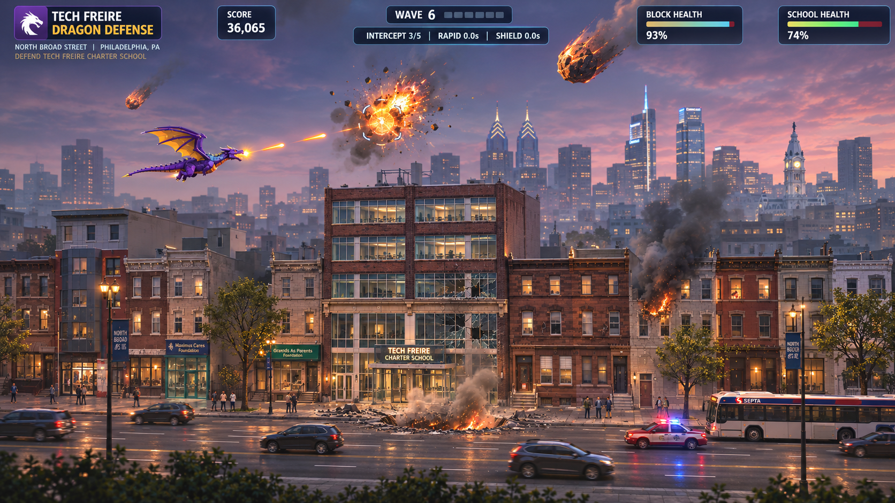

THE METEOR MISTAKE
Opening crisis, space lasers, Paulo awakens. Gameplay remains v4.14.0.
v5.0 Campaign Integration Preview — Storyboard player, four-chapter navigation, and protected v4.14.0 playable baseline. This is an early integration milestone, not a complete v5.0 gameplay release.
Launch original gameplayOpening crisis, space lasers, Paulo awakens. Gameplay remains v4.14.0.
Hero celebration, ICE pursuit, community resistance. New NPC mechanics pending.
Pentagon escalation and military occupation. New combat mechanics pending.
Citywide battle and alternate endings. New finale mechanics pending.
